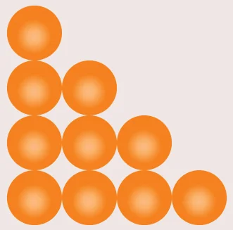
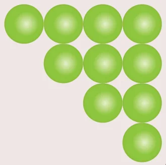
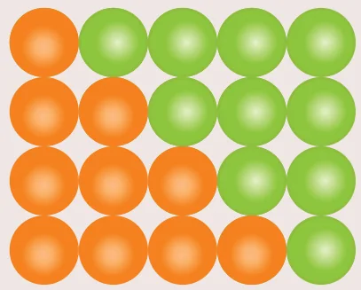

There are some series whose sum can be expressed by explicit formulae. Such series are called special series.
Here we study some common special series like
- Sum of first ‘\(n\)’ natural numbers
- Sum of first ‘\(n\)’ odd natural numbers.
- Sum of squares of first ‘\(n\)’ natural numbers.
- Sum of cubes of first ‘\(n\)’ natural numbers.
We can derive the formula for sum of any powers of first \(n\) natural numbers using the expression \((x + 1)^{k+1} - x^{k+1}\). That is to find \(1^k + 2^k + 3^k + \ldots + n^k\) we can use the expression \((x + 1)^{k+1} - x^{k+1}\).
2.11.1 Sum of first n natural numbers
To find \(1 + 2 + 3 + \cdots + n\), let us consider the identity \((x + 1)^2 - x^2 = 2x + 1\)
Where \(x = 1, 2, 3, \ldots, n - 1, n\)
\(\begin{aligned} x = 1,&\quad 2^2 - 1^2 = 2(1) + 1 \\ x = 2,&\quad 3^2 - 2^2 = 2(2) + 1 \\ x = 3,&\quad 4^2 - 3^2 = 2(3) + 1 \\ &\quad\ \vdots \\ x = n - 1,&\quad n^2 - (n - 1)^2 = 2(n - 1) + 1 \\ x = n,&\quad (n + 1)^2 - n^2 = 2(n) + 1 \end{aligned}\)
Adding all these equations and cancelling the terms on the Left Hand side, we get,
\(\begin{aligned} (n + 1)^2 - 1^2 &= 2(1 + 2 + 3 + \cdots + n) + n \\ n^2 + 2n &= 2(1 + 2 + 3 + \cdots + n) + n \\ 2(1 + 2 + 3 + \cdots + n) &= n^2 + n = n(n + 1) \\ 1 + 2 + 3 + \cdots + n &= \dfrac{n(n + 1)}{2} \end{aligned}\)
2.11.2 Sum of first n odd natural numbers
\(1 + 3 + 5 + \cdots + (2n - 1)\)
It is an A.P. with \(a = 1,\ d = 2\) and \(l = 2n - 1\)
\(\begin{aligned} S_n &= \dfrac{n}{2}[a + l] \\ &= \dfrac{n}{2}[1 + 2n - 1] \\ S_n &= \dfrac{n}{2} \times 2n = n^2 \end{aligned}\)
2.11.3 Sum of squares of first n natural numbers
To find \(1^2 + 2^2 + 3^2 + \cdots + n^2\), let us consider the identity \((x + 1)^3 - x^3 = 3x^2 + 3x + 1\)
Where \(x = 1, 2, 3, \ldots, n - 1, n\)
\(\begin{aligned} x = 1,&\quad 2^3 - 1^3 = 3(1)^2 + 3(1) + 1 \\ x = 2,&\quad 3^3 - 2^3 = 3(2)^2 + 3(2) + 1 \\ x = 3,&\quad 4^3 - 3^3 = 3(3)^2 + 3(3) + 1 \\ &\quad\ \vdots \\ x = n - 1,&\quad n^3 - (n - 1)^3 = 3(n - 1)^2 + 3(n - 1) + 1 \\ x = n,&\quad (n + 1)^3 - n^3 = 3n^2 + 3n + 1 \end{aligned}\)
Adding all these equations and cancelling the terms on the Left Hand side, we get,
\(\begin{aligned} (n + 1)^3 - 1^3 &= 3(1^2 + 2^2 + 3^2 + \cdots + n^2) + 3(1 + 2 + 3 + \cdots + n) + n \\ n^3 + 3n^2 + 3n &= 3(1^2 + 2^2 + 3^2 + \cdots + n^2) + \dfrac{3n(n + 1)}{2} + n \\ 3(1^2 + 2^2 + 3^2 + \cdots + n^2) &= n^3 + 3n^2 + 2n - \dfrac{3n(n + 1)}{2} = \dfrac{2n^3 + 6n^2 + 4n - 3n^2 - 3n}{2} \\ 3(1^2 + 2^2 + 3^2 + \ldots + n^2) &= \dfrac{2n^3 + 3n^2 + n}{2} = \dfrac{n(2n^2 + 3n + 1)}{2} = \dfrac{n(n + 1)(2n + 1)}{2} \\ 1^2 + 2^2 + 3^2 + \cdots + n^2 &= \dfrac{n(n + 1)(2n + 1)}{6} \end{aligned}\)
2.11.4 Sum of cubes of first n natural numbers
To find \(1^3 + 2^3 + 3^3 + \cdots + n^3\), let us consider the identity \((x + 1)^4 - x^4 = 4x^3 + 6x^2 + 4x + 1\)
Where \(x = 1, 2, 3, \ldots, n - 1, n\)
\(\begin{aligned} x = 1,&\quad 2^4 - 1^4 = 4(1)^3 + 6(1)^2 + 4(1) + 1 \\ x = 2,&\quad 3^4 - 2^4 = 4(2)^3 + 6(2)^2 + 4(2) + 1 \\ x = 3,&\quad 4^4 - 3^4 = 4(3)^3 + 6(3)^2 + 4(3) + 1 \\ &\quad\ \vdots \\ x = n - 1,&\quad n^4 - (n - 1)^4 = 4(n - 1)^3 + 6(n - 1)^2 + 4(n - 1) + 1 \\ x = n,&\quad (n + 1)^4 - n^4 = 4n^3 + 6n^2 + 4n + 1 \end{aligned}\)
Adding all these equations and cancelling the terms on the Left Hand side, we get,
\((n + 1)^4 - 1^4 = 4(1^3 + 2^3 + 3^3 + \cdots + n^3) + 6(1^2 + 2^2 + 3^2 + \cdots + n^2) + 4(1 + 2 + 3 + \cdots + n) + n\)
\(n^4 + 4n^3 + 6n^2 + 4n = 4(1^3 + 2^3 + 3^3 + \cdots + n^3) + 6 \times \dfrac{n(n + 1)(2n + 1)}{6} + 4 \times \dfrac{n(n + 1)}{2} + n\)
\(4(1^3 + 2^3 + 3^3 + \cdots + n^3) = n^4 + 4n^3 + 6n^2 + 4n - 2n^3 - n^2 - 2n^2 - n - 2n^2 - 2n - n\)
\(4(1^3 + 2^3 + 3^3 + \cdots + n^3) = n^4 + 2n^3 + n^2 = n^2(n^2 + 2n + 1) = n^2(n + 1)^2\)
\(1^3 + 2^3 + 3^3 + \cdots + n^3 = \left(\dfrac{n(n + 1)}{2}\right)^2\)
Do you know? — Ideal Friendship
Consider the numbers 220 and 284.
Sum of the divisors of 220 (excluding 220) \(= 1 + 2 + 4 + 5 + 10 + 11 + 20 + 22 + 44 + 55 + 110 = 284\)
Sum of the divisors of 284 (excluding 284) \(= 1 + 2 + 4 + 71 + 142 = 220\).
Thus, sum of divisors of one number excluding itself is the other. Such pair of numbers is called Amicable Numbers or Friendly Numbers.
220 and 284 are least pair of Amicable Numbers. They were discovered by Pythagoras. We now know more than 12 million amicable pair of Numbers.
Activity 6
Take a triangle like this

Make another triangle like this.

Join the second triangle with the first to get

Thus, two copies of \(1 + 2 + 3 + 4\) provide a rectangle of size \(4 \times 5\).
We can write in numbers, what we did with pictures.
Let us write, \((4 + 3 + 2 + 1) + (1 + 2 + 3 + 4) = 4 \times 5\)
\(2(1 + 2 + 3 + 4) = 4 \times 5\)
Therefore, \(1 + 2 + 3 + 4 = \dfrac{4 \times 5}{2} = 10\)
In a similar, fashion, try to find the sum of first 5 natural numbers. Can you relate these answers to any of the known formula?
Do you know?
- The sum of first \(n\) natural numbers are also called Triangular Numbers because they form triangle shapes.
- The sum of squares of first \(n\) natural numbers are also called Square Pyramidal Numbers because they form pyramid shapes with square base.
Thinking Corner
- How many squares are there in a standard chess board?
- How many rectangles are there in a standard chess board?
Here is a summary of list of some useful summation formulae which we discussed. These formulae are used in solving summation problems with finite terms.
\(\begin{aligned} \sum_{k=1}^{n} k = 1 + 2 + 3 + \cdots + n &= \dfrac{n(n + 1)}{2} \\ \sum_{k=1}^{n} (2k - 1) = 1 + 3 + 5 + \cdots + (2n - 1) &= n^2 \\ \sum_{k=1}^{n} k^2 = 1^2 + 2^2 + 3^2 + \cdots + n^2 &= \dfrac{n(n + 1)(2n + 1)}{6} \\ \sum_{k=1}^{n} k^3 = 1^3 + 2^3 + 3^3 + \cdots + n^3 &= \left[\dfrac{n(n + 1)}{2}\right]^2 \end{aligned}\)
Example 2.54
Find the value of (i) \(1 + 2 + 3 + \ldots + 50\) (ii) \(16 + 17 + 18 + \ldots + 75\)
Solution
- \(1 + 2 + 3 + \cdots + 50\)
Using, \(\quad 1 + 2 + 3 + \cdots + n = \dfrac{n(n + 1)}{2}\)
\(1 + 2 + 3 + \cdots + 50 = \dfrac{50 \times (50 + 1)}{2} = 1275\)
\(\begin{aligned} 16 + 17 + 18 + \cdots + 75 &= (1 + 2 + 3 + \cdots + 75) - (1 + 2 + 3 + \cdots + 15) \\ &= \dfrac{75(75 + 1)}{2} - \dfrac{15(15 + 1)}{2} \\ &= 2850 - 120 = 2730 \end{aligned}\)
Progress Check
- The sum of cubes of first \(n\) natural numbers is \(\underline{\qquad\qquad}\) of the first \(n\) natural numbers.
- The average of first 100 natural numbers is \(\underline{\qquad\qquad}\).
Example 2.55
Find the sum of (i) \(1 + 3 + 5 + \cdots\) to 40 terms (ii) \(2 + 4 + 6 + \cdots + 80\) (iii) \(1 + 3 + 5 + \cdots + 55\)
Solution
- \(1 + 3 + 5 + \cdots 40 \text{ terms} = 40^2 = 1600\)
- \(2 + 4 + 6 + \cdots + 80 = 2(1 + 2 + 3 + \cdots + 40) = 2 \times \dfrac{40 \times (40 + 1)}{2} = 1640\)
- \(1 + 3 + 5 + \cdots + 55\)
Here the number of terms is not given. Now we have to find the number of terms using the formula, \(n = \dfrac{(l - a)}{d} + 1 \Rightarrow n = \dfrac{(55 - 1)}{2} + 1 = 28\)
Therefore, \(1 + 3 + 5 + \cdots + 55 = (28)^2 = 784\)
Example 2.56
Find the sum of (i) \(1^2 + 2^2 + \cdots + 19^2\) (ii) \(5^2 + 10^2 + 15^2 + \cdots + 105^2\) (iii) \(15^2 + 16^2 + 17^2 + \cdots + 28^2\)
Solution
- \(1^2 + 2^2 + \cdots + 19^2 = \dfrac{19 \times (19 + 1)(2 \times 19 + 1)}{6} = \dfrac{19 \times 20 \times 39}{6} = 2470\)
\(\begin{aligned} 5^2 + 10^2 + 15^2 + \cdots + 105^2 &= 5^2(1^2 + 2^2 + 3^2 + \cdots + 21^2) \\ &= 25 \times \dfrac{21 \times (21 + 1)(2 \times 21 + 1)}{6} \\ &= \dfrac{25 \times 21 \times 22 \times 43}{6} = 82775 \end{aligned}\)
\(\begin{aligned} 15^2 + 16^2 + 17^2 + \cdots + 28^2 &= (1^2 + 2^2 + 3^2 + \cdots + 28^2) - (1^2 + 2^2 + 3^2 + \cdots + 14^2) \\ &= \dfrac{28 \times 29 \times 57}{6} - \dfrac{14 \times 15 \times 29}{6} = 7714 - 1015 = 6699 \end{aligned}\)
Example 2.57
Find the sum of (i) \(1^3 + 2^3 + 3^3 + \cdots + 16^3\) (ii) \(9^3 + 10^3 + \cdots + 21^3\)
Solution
- \(1^3 + 2^3 + 3^3 + \cdots + 16^3 = \left[\dfrac{16 \times (16 + 1)}{2}\right]^2 = (136)^2 = 18496\)
\(\begin{aligned} 9^3 + 10^3 + \cdots + 21^3 &= (1^3 + 2^3 + 3^3 + \cdots + 21^3) - (1^3 + 2^3 + 3^3 + \cdots + 8^3) \\ &= \left[\dfrac{21 \times (21 + 1)}{2}\right]^2 - \left[\dfrac{8 \times (8 + 1)}{2}\right]^2 = (231)^2 - (36)^2 = 52065 \end{aligned}\)
Example 2.58
If \(1 + 2 + 3 + \cdots + n = 666\) then find \(n\).
Solution
Since, \(1 + 2 + 3 + \ldots + n = \dfrac{n(n + 1)}{2}\), we have \(\dfrac{n(n + 1)}{2} = 666\)
\(n^2 + n - 1332 = 0 \Rightarrow (n + 37)(n - 36) = 0\)
So, \(n = -37\) or \(n = 36\)
But \(n \ne -37\) (\(\because n\) is a natural number); Hence \(n = 36\).
Progress Check
Say True or False. Justify them.
- The sum of first \(n\) odd natural numbers is always an odd number.
- The sum of consecutive even numbers is always an even number.
- The difference between the sum of squares of first \(n\) natural numbers and the sum of first \(n\) natural numbers is always divisible by 2.
- The sum of cubes of the first \(n\) natural numbers is always a square number.